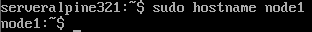

Déploiement & Sécurisation d'un Cluster Docker Swarm
Contexte du projet (Méthode STAR)
- Situation : Nécessité de déployer une infrastructure de conteneurs distribuée et hautement disponible, tout en garantissant la sécurité des communications inter-nœuds.
- Tâche : Monter un cluster Docker Swarm de 3 nœuds (1 Manager, 2 Workers) sous Alpine Linux, déployer des services répliqués, intégrer la supervision avec Portainer et durcir la sécurité.
- Action : Configuration du réseau overlay chiffré (
--opt encrypted), activation du verouillage automatique des clés (--autolock=true), déploiement d'une stack Portainer en YAML et audit du trafic viatcpdump. - Résultat : Un cluster opérationnel, supervisé visuellement et protégé contre l'interception de trafic et le vol de clés en mémoire au redémarrage.
1. Introduction & Préparation des VMs
Le but de ce TP est de créer un cluster à l'aide de Swarm basé sur trois machines alpines Linux.
Ce rapport détaillera chaque étape de ce TP en commençant par la création de nos différentes VM, en passant par l'installation de Docker sur nos différentes machines, la création du cluster Swarm et l'ajout de nos différents workers, l'installation d'un service sur le cluster et en finissant par l'ajout de Portainer dans le cluster et une conclusion.
L'objectif de ce cluster est de pouvoir mieux comprendre le fonctionnement d'un cluster (Comment est-ce que l'on peut mettre cela en place, comment installer des services sur un cluster ? Comment protéger un cluster ?)
J'ai choisi Swarm car il est plus léger, rapide et simple à déployer, contrairement à des solutions plus puissantes mais complexes comme Kubernetes.
Swarm est idéal pour mettre en place un cluster léger avec nos 3 machines
J'ai choisi Alpine Linux comme distribution pour mes machines virtuelle car c'est une distribution très légère et simple à configurer.
De plus, Alpine fonctionne très bien avec Docker pour créer des images légères et rapides, ce qui en fait un excellent choix pour notre cluster.
1.1 Création des machines virtuelles :**
Dans un premier temps nous allons créer trois machines virtuelles qui seront basées sur la distribution Linux alpine
Pour mettre en place ces machines virtuelles nous avons récupéré une OVA (Open Virtual Appliance) de notre formateur M. Franck Soubières.
L'OVA est une version compressée et encapsulée d'un OVF. Plutôt que d'avoir plusieurs fichiers séparés, tout est regroupé dans un seul fichier .ova (qui est en fait une simple archive TAR contenant les fichiers OVF, VMDK, MF, etc.).
L'OVF est un format standard ouvert pour le packaging et la distribution de machines virtuelles. Il permet de décrire la configuration d'une machine virtuelle (VM) de manière portable et indépendante d'un hyperviseur spécifique (VMware, VirtualBox, Hyper-V, etc.)
Un fichier OVF est en réalité un dossier contenant plusieurs fichiers :
-
.ovf : un fichier XML décrivant la configuration de la VM (Mémoire vive, Nombre de CPU, disque, réseau, etc.).
-
.vmdk : le ou les fichiers contenant l'image du disque dur de la VM.
-
.mf (Manifest) : contient des checksums (somme de contrôle) pour vérifier l'intégrité des fichiers.
-
.cert (optionnel) : certificat pour signer l'OVF et garantir son authenticité.
L'hyperviseur utilisé sera le logiciel VMWare Workstation
Pour créer les machines virtuelles nous allons nous rendre dans notre hyperviseur puis utiliser la fonctionnalité ouvrir, à partir de là il nous reste plus qu'à sélectionner notre fichier en .ova pour créer la machine virtuelle alpine :
{kind=link}
Ensuite une nouvelle fenêtre va apparaître nous demandant d'indiquer le nom de notre nouvelle machine virtuelle :
{kind=link}
Ainsi, la machine virtuelle est bien créée :
{kind=link}
Il ne nous reste plus qu'à créer deux autres machines alpines pour mener à bien ce TP, nous allons avoir besoin d'une première machine (Manager) et de deux autres machines (Workers) qui seront affiliées à ce manager.
Notre machine manager est déjà créé, il ne nous reste plus qu'à créer nos workers :
{kind=link}
{kind=link}
Ainsi nos trois VM sont ainsi bien créées.
1.2 Erreur AMD-V/RVI :
Dans mon cas précis, lorsque je vais essayer de lancer l'une des machines virtuelles, je vais obtenir le message d'informations suivant :
{kind=link}
Ainsi qu'une erreur si je clique sur le bouton yes :
{kind=link}
Ce problème vient du fait que je possède un processeur AMD sur mon ordinateur portable et que la virtualisation imbriquée (Nested Virtualization) n'est pas prise en charge ou activée sur ma machine.
Pour pouvoir tout de même lancer mes différentes machines virtuelles, je vais me rendre dans les paramètres de mes machines
Puis, dans la partie processeur, je vais décocher l'option suivante :
{kind=link}
Ainsi je pourrais tout de même lancer mes VMs au prix d'une moins bonne optimisation sur l'hyperviseur
2. Installation & Configuration de Docker sur Alpine
2.1 Lancement et connexion aux machines
Après avoir lancé une machine, pour se connecter, on va nous demander un nom d'utilisateur ainsi qu'un mot de passe
Ces données confidentielles sont les suivantes :
Nom d'utilisateur : "sysadmin"
Mot de Passe : "5ecuri+Y"
Après s'être authentifié, le message suivant va s'afficher :
{kind=link}
Nous pouvons désormais passer à l'installation de Docker
2.2 Installation et lancement de Docker :
Pour débuter cette étape nous allons écrire la commande sudo apk update pour mettre à jour la liste des paquets disponible dans les dépôts :
sudo apk update
À noter : apk update ne met pas nos paquets installés à jour, il met juste à jour la liste des versions disponible. C'est pour cela que nous allons enchaîner avec la commande sudo apk upgrade pour mettre à jour nos différents paquets installés :
sudo apk upgrade
Une fois que nous sommes sûr d'avoir nos paquets installés à jour nous pouvons passer à l'installation de Docker
Pour l'installer, on va écrire la commande suivante :
sudo apk add docker
Décomposition de la commande :
-
sudo ->Exécute la commande avec les privilèges admin (sinon, l'installation sera refusée).
-
apk -> Utilise Alpine Package Keeper, le gestionnaire de paquets d'Alpine Linux (équivalent de apt sur Debian ou dnf sur fedora par exemple).
-
add -> Indique qu'on veut installer un paquet.
-
docker ->Nom du paquet à installer.
La commande va installer Docker ainsi que ses dépendances et elle va également configurer certains fichiers nécessaires au bon fonctionnement de Docker.
Pour vérifier que Docker est bien installé sur notre machine on peut utiliser la commande docker --version :
docker --version
Cette commande nous prouve que Docker est bien installé sur notre système et affiche également la version de Docker installé.
Une fois Docker installé, nous allons désormais le démarrer
Pour démarrer le service Docker, nous allons écrire dans notre terminal la commande suivante :
sudo rc-service docker start
Ainsi notre service Docker est bien démarré
Pour que le service Docker puisse se lancer au démarrage de notre système nous allons taper dans le terminal la commande suivante :
sudo rc-update add docker
Pour finir, nous pouvons utiliser la commande docker info pour obtenir des infos détaillées sur l'installation et la configuration de notre docker :
docker info
2.3 Ajout du compte sysadmin dans le groupe docker
L'erreur que nous obtenons dans la partie "Server" provient du fait que le compte utilisateur que nous utilisons actuellement n'est pas dans le groupe docker
Pour vérifier quel compte nous utilisons actuellement on va taper la commande whoami qui permet de connaître notre nom d'utilisateur :
whoami
Nous sommes donc connectés en tant que l'utilisateur sysadmin
Pour l'ajouter au groupe docker on va taper la commande suivante :
sudo addgroup $(sysadmin) docker
Malheureusement nous obtenons l'erreur addgroup : group 'docker' in use. Cela signifie qu'un groupe docker est déjà créé et donc nous ne pouvons utiliser cette commande pour ajouter un nouvel utilisateur.
Nous ne pouvons pas non plus utiliser la commande usermod car elle n'est pas disponible sur la distribution alpine.
Nous allons donc devoir modifier les fichiers de configuration des groupes dans un éditeur de texte
On va taper la commande suivante :
sudo nano /etc/group
Pour pouvoir ouvrir le fichier /etc/group dans un éditeur de texte et ainsi pouvoir modifier ses propriétés
Lorsque nous ouvrons le fichier en question, on se retrouve avec un fichier contenant tous les groupes présents sur notre système :
{kind=link}
On va ainsi se rendre tous en bas du fichier dans la partie docker pour y ajouter notre utilisateur qui s'appelle sysadmin :
{kind=link}
Il ne reste plus qu'à sauvegarder les changements :
{kind=link}
Puis, à quitter le fichier :
{kind=link}
Pour appliquer nos changements, nous allons redémarrer notre machine :
sudo reboot now
Pour vérifier que notre utilisateur est désormais bien dans le groupe docker nous allons taper la commande groups suivi de notre nom d'utilisateur :
groups sysadmin
Notre utilisateur sysadmin est donc bien désormais présent dans le groupe docker. Si nous retapons la commande docker info nous ne devrions plus avoir de message d'erreur :
{kind=link}
Nous pouvons exécuter la commande docker run hello-world pour être sûr que notre Docker fonctionne correctement et que nous pouvons générer et utiliser des conteneurs :
docker run hello-world
Ainsi le logiciel Docker est bien installé sur notre machine manager, il nous reste plus qu'à faire de même sur les deux machines workers :
{kind=link}
{kind=link}
3. Renommage des Hôtes & Préparation Réseau
Avant de mettre en place le cluster et d'y ajouter nos trois machines nous allons les renommer, ce qui nous permettra de les distinguer par la suite
Notre machine manager sera ainsi renommée node1 et nos deux autres machines seront renommées respectivement node2 et node3.
Pour faire ceci, on va taper la commande suivante dans le terminal :

{kind=link}
{kind=link}
Dans ce fichier, nous allons voir le nom de notre machine de base :
{kind=link}
Que nous allons modifier en :
{kind=link}
Il ne nous reste plus qu'à sauvegarder et quitter
Pour finir, il faudra reboot la machine pour être sûr que tous les changements ont bien été appliqués :
{kind=link}
La même chose sera appliquée sur les deux machines workers pour différencier chaque machine :
{kind=link}
{kind=link}
4. Initialisation & Jonction du Cluster Swarm
4.1 : Initialisation du cluster SWARM
Pour initialiser Swarm sur notre machine manager nous avons besoin de connaître notre adresse IP, c'est pour cela que nous allons utiliser la commande ifconfig :
{kind=link}
Nous pouvons voir que l'adresse IP de notre machine manager est 192.168.1.131
Nous pouvons maintenant initialiser Swarm sur notre machine manager avec la commande suivante docker swarm init --advertise-addr adresse_IP_machine :
{kind=link}
Ainsi notre cluster Swarm est bien initialisé il nous reste plus qu'à rajouter nos workers à l'aide de la commande suivi d'un token qui nous est affiché dans le terminal
4.2 : Ajouts de nos workers sur le cluster :
Pour cette étape nous allons nous connecter à l'aide du protocole SSH à notre machine manager puis à nos deux machines worker, cela nous permettra de copier la commande pour ajouter un worker au cluster puis de la coller sur les machines worker sans avoir à taper la commande manuellement avec le token, ce qui serait très long et fastidieux
Pour cette étape, il va nous falloir l'adresse IP de nos deux machines worker :
Adresse IP de notre machine Manager : 192.168.1.131 :
{kind=link}
Adresse IP de notre machine Worker1 : 192.168.1.132 :
{kind=link}
Adresse IP de notre machine Worker2 : 192.168.1.133 :
{kind=link}
Dans le logiciel on va donc taper l'adresse IP de notre machine manager :
{kind=link}
On va accepter la connexion même si la clé hôte est en clair pour le serveur :
{kind=link}
Pour se connecter, on va renseigner notre nom d'utilisateur suivi de notre mot de passe :
{kind=link}
Ainsi, une connexion en SSH a bien été établie
Pour afficher de nouveau le token pour ajouter des worker sur notre cluster on va taper la commande suivante :
{kind=link}
L'intérêt d'ouvrir une session SSH sur nos différentes machines va être de pouvoir copier/coller la commande docker swarm join avec le token pour rajouter rapidement et facilement nos worker
Ainsi, les worker1 et 2 ont bien rejoint le cluster :
{kind=link}
{kind=link}
Pour être sûr que tout fonctionne correctement sur notre cluster et que nos deux worker soient bien connectés au cluster, on va utiliser la commande docker node ls :
{kind=link}
Ainsi on peut voir que nos trois machines sont bien connectées entre elles à l'aide du cluster, le leader peut être identifié et chaque machine est distinguable puisque on a modifié le nom de chaque machine.
5. Déploiement d'un Service Web Répliqué (Nginx)
Dans notre cas nous allons mettre en place le service nginx pour faire le test
On va taper la commande suivante sur la machine manager :
{kind=link}
-
docker service create : Crée un nouveau service dans Docker Swarm. Un service dans Docker Swarm est une appli qui peut être déployée sur plusieurs nœuds dans le cluster.
-
--name web : Donne le nom du service créé. Ici, le service créé s'appelle web.
-
--replicas 3 : Spécifie le nombre de réplicas (instances) du service que Docker doit exécuter. Dans ce cas, Docker va créer 3 réplicats du service, ce qui signifie 3 conteneurs identiques exécutant le même service Nginx.
-
-p 8080:80 : Lie le port 8080 de la machine hôte (le nœud qui exécute le service) au port 80 du conteneur. Ainsi, chaque fois qu'on va accéder à http://
-
nginx : Il s'agit de l'image Docker à utiliser pour créer les conteneurs du service. Dans ce cas, l'image Nginx est utilisée pour exécuter un serveur web Nginx dans chaque réplique du service.
On va ensuite vérifier que les services tournent :
{kind=link}
Ainsi que les conteneurs :
{kind=link}
Nous allons tester le bon fonctionnement de Nginx en accédant à l'adresse http://192.168.1.131:8000.
Ainsi lorsqu'on se connecte sur l'URL indiquée plus haut sur notre navigateur on arrive sur la page par défaut de Nginx, le service est donc bien installé :
{kind=link}
Il est également possible de prouver le bon fonctionnement du service à l'aide de la commande curl http://192.168.1.129:8000 :
{kind=link}
6. Supervision du Cluster avec Portainer
Pour finir la mise en place de notre cluster, nous allons utiliser Portainer pour avoir une vue globale sur notre infrastructure.
Pour faire ceci, sur notre machine manageur nous allons créer un nouveau fichier qui s'appellera docker-compose.yml et nous allons l'ouvrir à l'aide de l'éditeur de texte nano :
{kind=link}
Dans ce fichier fraichement crée nous allons ajouter le contenu suivant :
version: '3.8'
services:
portainer:
image: portainer/portainer-ce:latest
volumes:
- /var/run/docker.sock:/var/run/docker.sock
- portainer_data:/data
ports:
- 9000:9000
deploy:
replicas: 1
placement:
constraints:
- node.role == manager
volumes:
portainer_data:
Explication du fichier :
-
version: '3.8' : Spécifie la version de Docker Compose utilisée.
-
services : Définit les services qu'on souhaite déployer. Ici, ce sera Portainer.
-
portainer : C'est le nom du service. Ici ce sera l'application Portainer.
-
image : Spécifie l'image Docker à utiliser. Ici, on utilise l'image officielle de Portainer.
-
volumes : Monte le socket Docker (/var/run/docker.sock) afin que Portainer puisse interagir avec le Docker de notre nœud. Le volume portainer_data est également utilisé pour stocker les données de Portainer.
-
ports : Le port 9000 est mappé pour accéder à l'interface graphique de Portainer.
-
deploy : Spécifie les options de déploiement dans Docker Swarm, comme le nombre de répliques et où le service doit être déployé (ici sur un nœud manager).
Il ne nous reste plus qu'à sauvegarder et à quitter le fichier
Pour finir, nous allons déployer Portainer à l'aide de la commande suivante :
{kind=link}
Désormais il ne nous reste plus qu'à accéder à portainer à l'aide de l'adresse suivante : http://192.168.1.131:9000
Nous allons arriver sur la page de connexion qui va nous demander de créer un utilisateur admin et d'y ajouter un nouveau mot de passe puis de le confirmer :
{kind=link}
Sur portainer nous allons avoir une interface avec de nombreuses options de personnalisation concernant les utilisateurs ou l'environnement, par exemple :
{kind=link}
Justement, dans la partie Environnement on peut voir que notre cluster est bien détecté :
{kind=link}
On peut y retrouver nos conteneurs :
{kind=link}
Nos stacks :
{kind=link}
Nos services :
{kind=link}
Nos images :
{kind=link}
Nos volumes :
{kind=link}
Et nos réseaux :
{kind=link}
Pour finir dans la partie Swarm on peut voir nos différents nœuds présent dans le cluster :
{kind=link}
Pour finir voici une représentation graphique de notre cluster :
{kind=link}
7. Hardening & Sécurisation Avancée du Cluster
Plusieurs améliorations peuvent être mis en place sur notre cluster notamment au niveau de la sécurité
7.1 Chiffrement des communications entre nœuds :
Pour faire ceci on va taper la commande suivante :
{kind=link}
Cette commande va permettre de créer un nouveau réseau docker de type overlay avec un chiffrement de communication entre les différents nœuds du cluster Swarm.
Désormais pour vérifier si le chiffrement des communications est bien actif nous allons utiliser l'outil tcpdump
Après avoir installé l'outil sur nos worker nous allons taper la commande suivante :
{kind=link}
Explication des ports :
-
2377 -> Port utilisé par Swarm pour le contrôle du cluster.
-
7946 -> Port utilisé pour la découverte des nœuds et la communication entre eux.
-
4789 -> Port utilisé pour le trafic overlay des services Docker Swarm.
Cette commande va permettre d'écouter les paquets en transit sur le réseau Swarm
Voici ce que nous allons obtenir à l'aide de la commande :
{kind=link}
Comme nous pouvons le constater, les valeurs affichées sont en hexadécimal et illisibles, ce qui prouve que le chiffrement est bien actif.
Normalement, sans chiffrement, nous devrions voir des requêtes HTTP en clair. Ici, le chiffrement fonctionne correctement.
7.2 Activation de l'auto-lock sur Swarm :
L'auto-lock va obliger l'administrateur à déverrouiller manuellement les nœuds manager après un redémarrage
Pourquoi mettre en place ce dispositif de sécurité ? :
-
Par défaut, Swarm stocke ses clés de chiffrement dans la Mémoire vive du manager.
-
Si le manager redémarre, les clés sont automatiquement rechargées, ce qui peut être un risque de sécurité.
-
Avec --autolock=true, Swarm exige une intervention manuelle pour déverrouiller le cluster après un redémarrage.
Pour mettre en place l'option auto-lock on va taper la commande suivante :
{kind=link}
Voici ce que la commande va retourner :
{kind=link}
Ainsi la clé de déverrouillage nous est affichée il faudra donc bien la conserver pour le prochain redémarrage
De la même manière si on tape la commande suivante :
{kind=link}
On obtient également la clé de déverrouillage
Pour tester notre nouvelle mesure de sécurité on va redémarrer notre machine manager en prenant bien soin de conserver notre clé de déverrouillage
Lorsque je vais taper la commande docker swarm unlock-key pour afficher ma clé de déverrouillage je vais obtenir le message suivant :
{kind=link}
Pour débloquer ma machine manager je vais taper la commande suivante :
{kind=link}
Puis ici je vais rentrer ma clé :
{kind=link}
Ainsi, mon nœud manager est bien déverrouillé.
7.3 Vérification des logs de Docker pour détecter des anomalies :
Sur Alpine Linux, nous allons utiliser docker logs ou lire /var/log/docker.log pour lire nos fichiers de logs et voir les erreurs éventuelles.
Par exemple nous allons lire les logs de notre service Nginx :
Pour cela nous allons vérifier nos conteneurs en cours de démarrage à l'aide de la commande docker ps :
{kind=link}
Pour donner suite à cela nous allons taper la commande docker logs suivi de l'ID de notre conteneur :
{kind=link}
Voici ce que nous obtenons comme résultat :
{kind=link}
Nous n'avons pas d'erreur ou de possible intrusion dans les logs de notre service Nginx
8. Bilan & Synthèse Technique
Ainsi nous avons pu mettre en place un cluster avec l'outil d'orchestration Swarm à l'aide de trois machines alpines.
Sur ces trois machines nous avons installé docker puis nous l'avons testé en utilisant l'image hello-world
Nous avons ensuite initialisé Swarm sur la machine manager, ce qui a généré une commande permettant aux machines worker de rejoindre le cluster.
Une fois le cluster mis en place et les trois machines connectées, nous avons installé le service Nginx pour illustrer le déploiement d'une application sur Swarm.
Enfin, nous avons ajouté Portainer pour superviser plus facilement notre cluster.